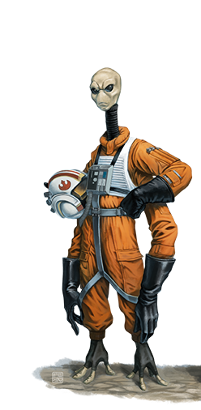

Xexto
Special Abilities: Xexto begin play with one rank in the Confidence talent.
Additional Limbs: Xexto have six limbs: two legs and four arms. As a result, they gain an additional free maneuver per turn, though still may not perform more than two maneuvers per turn.
The Xexto are a wiry, six-limbed species of humanoids with tiny heads atop long necks. Thanks to Arkanian experimentation, the Xexto are the genetic progenitors of the Quermians, and seem to share evolutionary similarities to the Kaminoans. Xexto have an insatiable demand for adventure and excitement, and there is little in the galaxy considered more dangerous than a pair of bored Xexto. While some regard their courage as false bravado and pride, the Rebel Alliance is proud to count the Xexto among its ranks, and have honored many for valor, though often posthumously
The Xexto are a slight species with pale, chalky skin and lithe bodies that sprout six, spindly limbs, four of which Xexto use as arms. Their small, round heads sit atop long necks, and feature large dark eyes and tiny mouths. Their skin is pale and can be shaded yellow, green, purple, or blue.
The Xexto have two brains, with basic body functions under the purview of the head, and higher functions carried out in the chest. Their large, black eyes are well suited to seeing in dark forests and caves, and Xexto often wear tinted goggles to protect their eyes when in areas of harsh, direct sunlight. Their reflexes are incredibly sharp, and they are mentally resilient in the face of trauma. Predators once dominated their homeworld, which helped test and develop Xexto quickness and resilience for millennia.
While academic circles are familiar with the story of how Arkanian geneticists experimented on Xexto to create the Quermian species, there is a more recent, lesser-known theory postulated by a number of fringe researchers. Their theory suggests that early Kaminoan geneticists created the Xexto as laborers for Troiken's spice mines on behalf of ancient Hutts almost twenty thousand years ago, and claim they have proof in the form of key Kaminoan markers present in Xexto DNA. They believe the Arkanians were only interested in the Xexto to gauge the Kaminoan threat to business.
The Xexto primarily live in sprawling, technologically advanced arboreal villages throughout Troiken's forests; they have also constructed a number of modern cities and spaceports. Veterned is the capital, and consists of buildings and facilities inspired by Core World architecture akin to that found on Corellia. Intricate mosaics of blue, purple, green, and yellow silicates adorn interior walls of both the villages and cities, featuring themes that conjure feelings of speed and motion, sometimes including native fauna such as the skizzard.
As a species, the Xexto have grown used to a lifestyle of risk-taking, and bravery in the face of a challenge is their most valued quality. Political campaigns for leadership often boil down to a series of escalating dares, where the first to back down or die loses. Some Xexto, such as those starring in the Cresh Krill Yirt series of holovids, have developed cult-like followings for their daring stunts, which often result in predictably awful injuries.
While the Xexto have many pursuits, including mosaic art, traditional drum music, and teasing local predators, their cultural obsession is Podracing. Their world has a number of tracks that run through the dense forests and mountains of Troiken, and some cross over to the uninhabitable portions of the planet. Gasgano has long been a racing legend on Troiken, and many young Xexto idolize him and purchase merchandise related to the aging racer to this day. Xexto off Troiken are often competing in or following a racing circuit, usually that of Podracing, though anything fast is appealing to them.
Troiken is a tidally locked planet in the Colunda sector's Troiken system near the Rimward edge of the Perlemian Trade Route, which causes the inner half of the planet to burn under the heat of its star and the outer half to freeze. A large moon in a polar orbit traces a narrow ring of habitable land to provide something approaching a day-night cycle.
The mountains are large, purple-hued rocks with labyrinthine mines tunneled over thousands of years. The Hormick Range once harbored large deposits of andris and collafa spice, though most believe those mines are dry. Hormick Range's Mount Avos was the historical site of the decisive battle of the Stark Hyperspace War, a conflict that preceded the Clone Wars. The mountains are home to the carnivorous challat eaters, fist-sized bioluminescent insects that flew in massive swarms, devouring everything in their path. The mountains also feature predatory, cat-like leaptigs, which stalk the nearby valleys and plains in packs for grazers and bantha offshoots.
The forests of Troiken house two-thirds of the world's Xexto. Historically, the Xexto's earliest cities were primitive tree houses connected by cables near mountains. Early Xexto had to contend with dozens of forest predators, and while most predators still exist on Troiken today, they are predominantly in zoological exhibits and preserves. Of course, this only rarely stops Xexto from hopping a fence to slap a horn-faced surtops in the flank.
The Xexto have developed the Xextese language, which consists of rapid nasal jabbering. Xextese also has a written component, but few non- Xexto bother to learn to speak or read Xextese. Most Xexto have learned to speak at least a broken version of Basic or Huttese, which sounds like a reedy and nasal jabbering in their long throats.
Xexto outside the racing circuit are uncommon, but anywhere that has a steady stream of excitement is bound to attract them eventually. The Xexto never cared much for the Republic, nor humans in general, and care even less for the Empire. That said, the Empire has yet to affect Troiken directly, and the Xexto rarely think about the larger picture of the Alliance's struggle against the Empire.
However, fighting for the Rebel Alliance is dangerous, and a number of Xexto have signed on because their courage was called into question by a savvy recruiter. Xexto make fantastic Aces, Soldiers, and Spies, thanks to their fearless natures and courage under fire. As Commanders, they lead troops from the front lines to inspire those under their command with their own valor. Xexto are less likely to pursue careers as Diplomats or Engineers, though if they can be convinced of the danger of such a life, they would leap at the chance.
Troiken is home to one of the most rabid Podracing fan bases in the galaxy, and the world has some of the most dangerous and demanding tracks ever plotted. A number of pod manufacturers, such as Irateq, maintain research and development facilities on Troiken specifically because of the access to both test pilots and tracks.
Track design is something of an art form on Troiken. One of the most lethal tracks is the Xextoan Infiloop, a series of six short loops that all meet at a mutual twelve-way intersection. The design is fiendishly simple, but responsible for some of the most spectacular crashes in all of Podracing. Engineers designed the loop lengths so that by the end of the first lap, the traffic through the intersection muddles, all but guaranteeing explosive collisions.
The most popular track is known as the Pod Melter, which crosses over onto the hot side of the planet outside Troiken's habitable zone. Heat management is a key element of any Podrace, but Troiken's dayside can reach temperatures over four hundred degrees, which can cause podracers to overheat in minutes, and even melt. The course is a battle over the few sections that have strategically placed solar shades. Podracers that crash on the hot half of the course often result in fatalities, as the rescue droids are rarely able to recover pilots before they roast alive.